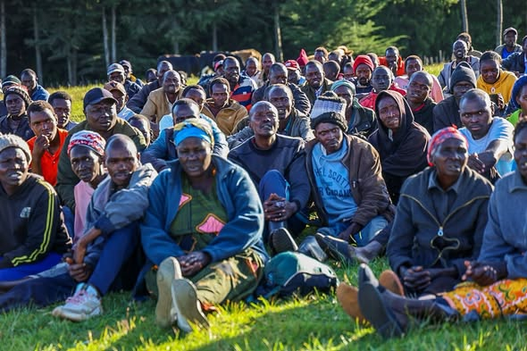
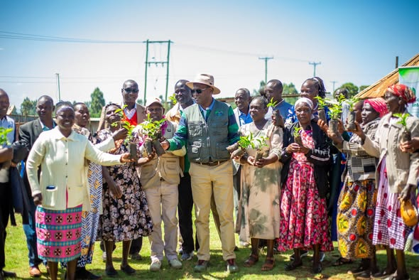
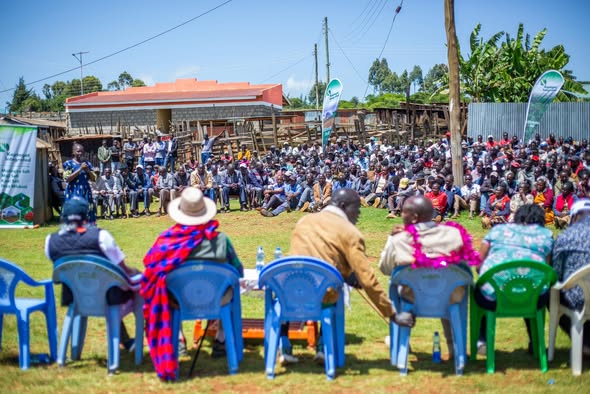
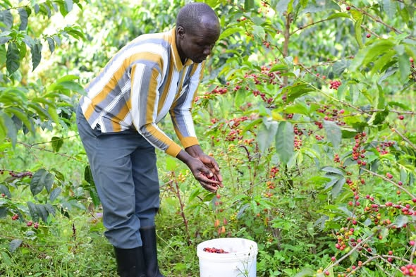

The Kaptagat Integrated Conservation Programme
Founded in 2017 by Dr. Chris Kiptoo, the Kaptagat Integrated Conservation Programme (KICP) is a grassroots model that unites ecological restoration with sustainable community livelihoods in the Cherang'any-Elgeyo-Kaptagat Ecosystem. Over a decade, it has demonstrated that conservation and community prosperity are not competing goals — they are one and the same mission.
Forest Restoration
Over 2,700 hectares of degraded forest have been rehabilitated through community forest associations, tree planting drives, and sustained stewardship of key forest blocks including Penon, Kessup, and Kaptagat.
Community Livelihoods
More than 28,000 households have been empowered through agroforestry — coffee, avocado, macadamia, and fruit seedling distribution — creating sustainable income and reducing reliance on forest resources.
Water Security
The Kaptagat Forest is a critical water tower for the North Rift region. KICP investments in dams, water catchment restoration, and riparian protection directly support agricultural productivity and household water access.
Institutional Partnerships
KICP brings together national government ministries, county governments, community forest associations, and the local community — a multi-stakeholder model that ensures lasting impact beyond any single administration.
KICP in the Field
From forest restoration to community engagement, these images capture the breadth of work being done across the Kaptagat ecosystem.



